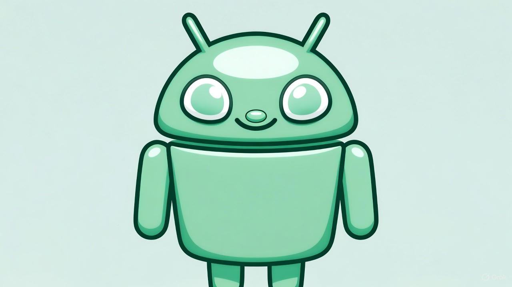
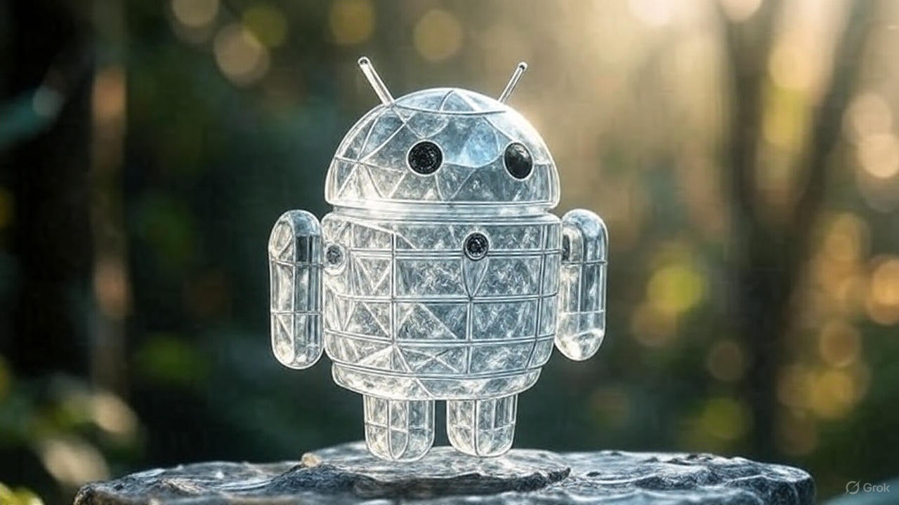

O Lado Oculto do Bugdroid
Se você já se aprofundou na história do mascote do Android, o simpático Bugdroid, sabe que ele foi inspirado nos ícones de portas de banheiro. Mas o que você não sabe é que existem várias curiosidades e lendas internas no Google sobre esse robozinho, muitas delas inventadas ou distorcidas ao longo do tempo. Reunimos algumas "curiosidades" fictícias que circulam nos corredores da empresa.
1. A Cor Secreta do Android
Você sabia que a cor padrão do Bugdroid (o verde ${(\#3DDC84)}$) tem um nome interno secreto? A lenda diz que, nos primeiros dias de desenvolvimento, a equipe de design chamava a cor de "Marshmallow Mint" (Menta Marshmallow), uma referência direta à paixão da equipe por doces, antes mesmo de se tornar um padrão oficial de nomeclatura de versões.

Essa cor, segundo os rumores, foi escolhida por ter o melhor contraste em telas de baixa resolução da época, garantindo que o mascote fosse sempre facilmente identificável.
2. O Código Oculto nos Olhos
Os dois círculos simples que servem como olhos do Bugdroid são, na verdade, um código binário. É claro que isso é pura invenção, mas uma curiosidade que a equipe de engenharia adora espalhar é que, se você inverter os pixels dos olhos, a sequência forma o número ${42}$, uma homenagem geek a "Guia do Mochileiro das Galáxias" e sua "Resposta para a vida, o universo e tudo mais".
3. A Versão "Gelo" do Mascote
Para a versão **Ice Cream Sandwich (4.0)**, a designer Irina Blok teria criado uma versão secreta e não utilizada do Bugdroid feita inteiramente de "gelo" ou um material transparente. O objetivo era usá-lo em propagandas interativas de Realidade Aumentada. O nome interno desse mascote era "FrostDroid", e ele supostamente seria capaz de "derreter" em certas animações. Nunca foi usado, mas os rascunhos são mantidos como relíquias no arquivo de design.

Essas são apenas algumas das muitas histórias, reais e inventadas, que tornam o mascote do Android uma das figuras mais carismáticas do mundo da tecnologia. O Bugdroid continua evoluindo, mas sua simplicidade e simpatia permanecem intactas.